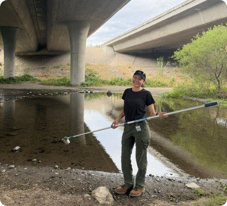
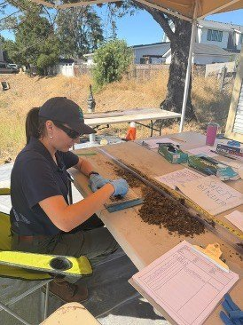
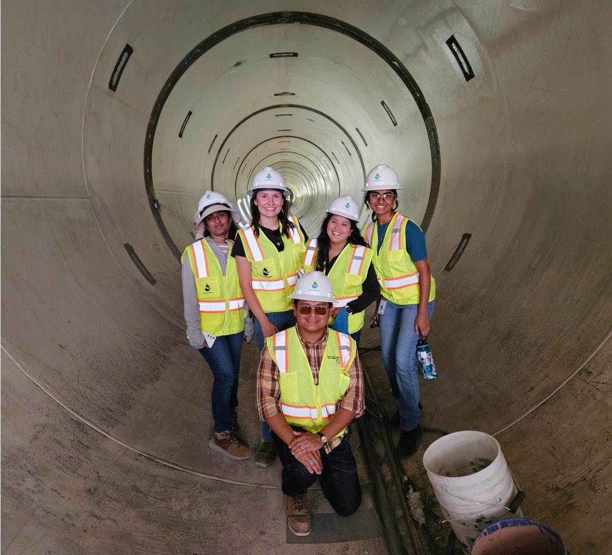

Hi, I'm Brooke.
I'm an environmental scientist based in Los Osos, California.
Where I've worked
WaterLand and fireResearch and teaching
In the field




Open to new roles
Let's work together.
I'm finishing my M.S. at Cal Poly SLO in December 2026 and looking for roles in GIS, water resources, natural resource management and environmental monitoring, on California's Central Coast or remote.
- Emailbrooke.murphy0207@gmail.com
- LinkedInin/brooke-murphy0207
- GitHubBam0207
- Based inLos Osos, California